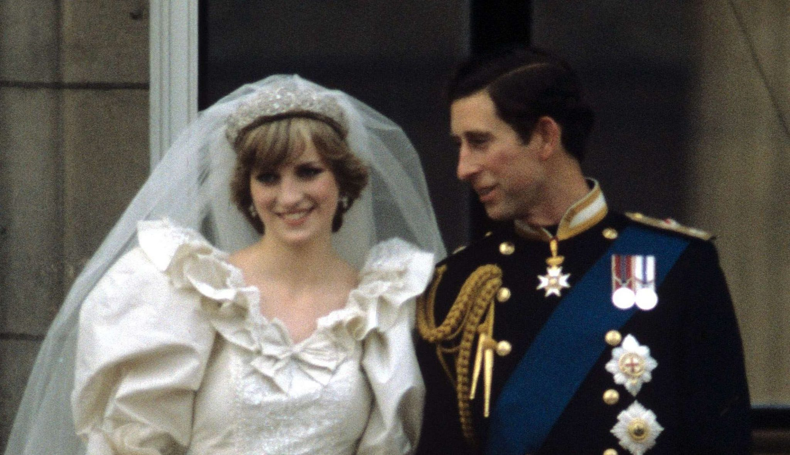
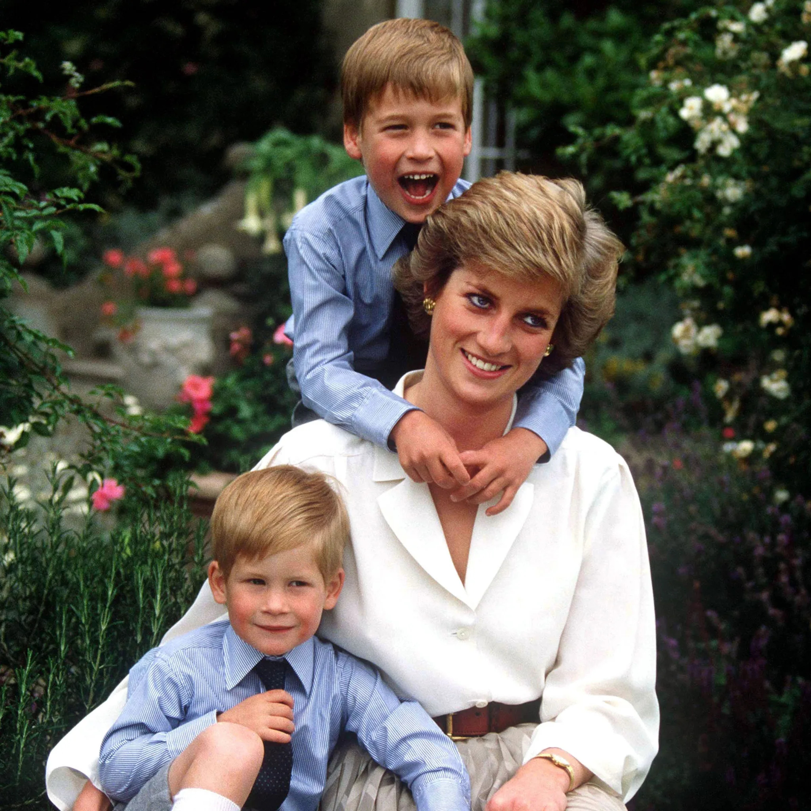
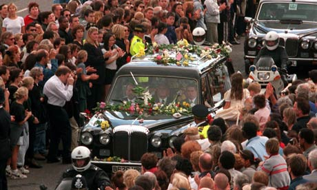

Vie Peronnel :
Diana Spencer de son nom de jeune fille, surnommé Lady di est né le 1er juillet 1961 à Sandrinngham et morte le 31 août 1997 à Paris. C’est une aristocrate anglaise ainsi que membre de la famille royal britannique.
En 1981, elle épouse Charles, prince de Galles, héritier du trône britannique. Ils ont eu deux enfants : William, en 1982 et Henry, dit “Harry” en 1984.


Elle a vite eu une grande popularité et devient une figure mondiale pour la cause humanitaire. Elle est la personnalité la plus médiatisé de la famille royale britannique avec sa belle-mère Élisabeth II.
En 1992, le prince Charles et Diana se sépare et le divorce est acté en 1996.
Funéraille :
Elle meurt en 1997 à 36 ans lors d’un accident de voiture dans le tunnel de la voie Georges-Pompidou sous la place de l’Alma à Paris, poursuivie par des paparazzis lors du drame.
Sa mort suscite énormément d’émotion dans le monde entier. Lors de ses funérailles, qui ont eu lieu le 6 septembre 1997 à l’Abbaye de Westminster, rassemblent environ 3 millions de personnes à Londres. La célébration a été retransmise dans de nombreux pays dans le monde.
Énormément de bouquet ont été déposé devant sa résidence à Londres, environ un million de bouquets sont déposés.
Lors du trajet funéraire, des nombreuses fleurs sont jetés sur le cercueil.
